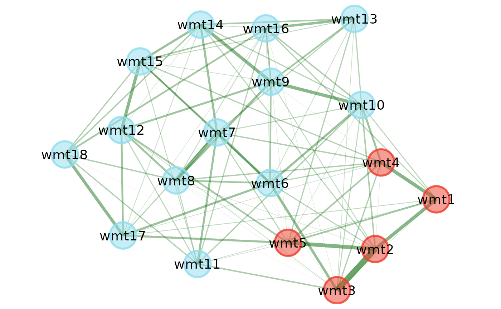
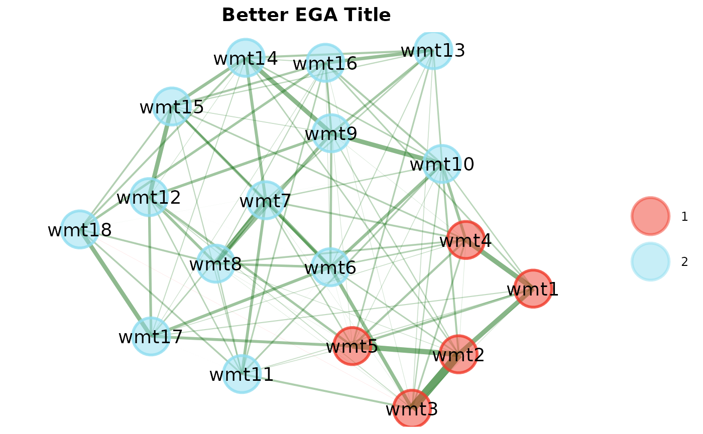
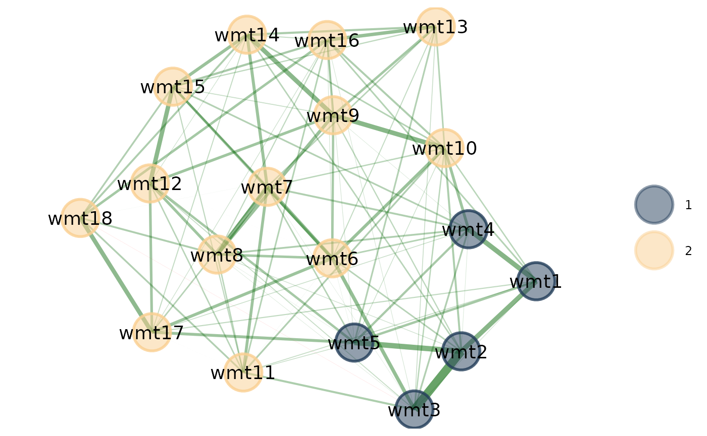
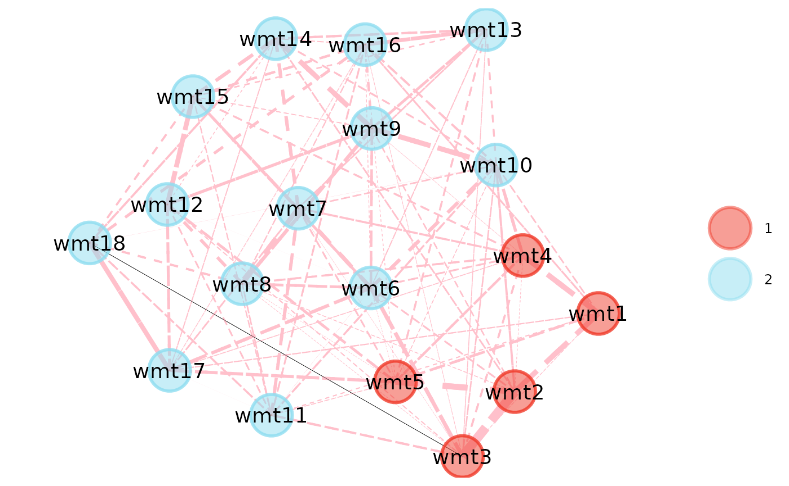

Plotting in {EGAnet} has become much more flexible by passing on
most arguments to {GGally}’s ggnet2 (some arguments might
not change to keep a consistent {EGAnet} style to the plots). This Wiki
walks through some of the flexibility available in {EGAnet}’s plots.
This demonstration is only the start – you can use these plots as the
foundation for your own creations. These examples focus solely on
EGA plotting but apply to all *EGA plots.
Basic Plot
# Load necessary packages
library(EGAnet); library(GGally); library(ggplot2)
# Estimate EGA
ega.wmt <- EGA(wmt2[,7:24], plot.EGA = FALSE)
# Plot
plot(ega.wmt)
Legend
Remove legend

Handling legend title and text can be done using the standard
?ggplot2::theme arguments
Title
Adjusted Title (centered, larger size, bold)
plot(ega.wmt) +
ggtitle("Better EGA Title") +
theme(plot.title = element_text(size = 14, face = "bold", hjust = 0.5))
Layout
For all available layout options, see
?sna::gplot.layout. Remove gplot.layout. to
use the layout (e.g., gplot.layout.circle =
layout = "circle")
Circle
plot(ega.wmt, layout = "circle")Nodes
Colors
Change Colors Using Color Palette
plot(ega.wmt, color.palette = "blue.ridge2")
Change Colors Using HEX Codes
For quick color palette ideas, check out this color palette generator
Edges
Size
plot(ega.wmt, edge.size = 12)Colors and Line Type
plot(
ega.wmt, edge.alpha = 1,
edge.lty = c( # line type
"dashed", # positive edge first
"solid" # negative edge second
),
edge.color = c( # color
"pink", # positive edges first
"black" # negative edges second
)
)